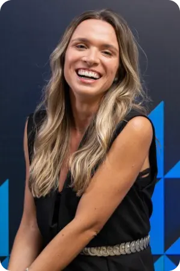
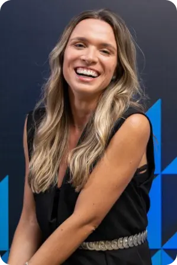

Fundadora do Instituto
Amanda Olivieira
Nossos número
12788+
xxxxxxx12788+
xxxxxxx12788+
xxxxxxx12788+
xxxxxxxDespertar, educar e coroar um milhão de meninas até 2030
Conheça a história de seupeção da nossa fundadoraReconhecimentos
Texto introdutório do conteúdo abaixo Texto introdutório do conteúdo abaixo Texto introdutório do conteúdo abaixo Texto introdutório do conteúdo abaixoNossos Prêmios
2007
Fundação do Coletivo Musical2016
Medalha do Mérito Comunitário2019
Nação Valquírias anuncia Expansão apoiada por Carolina Herrera2009
Recebe apoio do Ponto de Cultura2017
Reconhecimento Nacional no palco do Caldeirão do Huck com Luciano Huck2020
Nação Valquírias protagoniza em Campanha Interna-cional com LENOVO2013
Aprova edital Criança Esperança - UNESCO | GLOBO2018
Lista da Forbes Under 30 como uma das 30 jovens com potencial de mudar o mundo2021
Banda As Valquíriascria beat da campanha da MOTOROLA
2014
Aprova segundo edital pelo Criança Esperança - UNESCO | Globo2007
Fundação do Coletivo Musical2007
Fundação do Coletivo Musical2007
Fundação do Coletivo Musical2007
Fundação do Coletivo Musical2007
Fundação do Coletivo Musical2007
Fundação do Coletivo Musical2007
Fundação do Coletivo Musical2007
Fundação do Coletivo Musical2007
Fundação do Coletivo Musical2007
Fundação do Coletivo Musical2007
Fundação do Coletivo MusicalNossa História
O Instituto Nação Valquírias é uma Organização da Sociedade Civil
Com sede instalada na Zona Norte da cidade de São José do Rio Preto. Hoje nossa atuação estrutura-se a partir de cinco esferas: Governança, Negócios Sociais, Impacto Social, Impacto Ambiental e Impacto Emocional que se desdobram em 25 programas sociais.
Fundada em 2007, fomos de coletivo a organização social e trabalhamos arduamente para que os temas desigualdade social e de gênero sejam vistos somente nos livros de história.
Somos um Instituto inquieto, vibrante e cheio de energia para prosseguir na missão de criar soluções inteligentes para o fim da pobreza emocional e monetária de meninas e mulheres em todo país.
Nação Valquírias tem a coroa como símbolo de seu trabalho
para que todos os dias as meninas e mulheres que ainda estão em situação de pobreza se lembrem que seus contos não são de fada, mas são contos de força. Toda essa abordagem busca fazer com que elas tomem consciência de que uma Rainha deve andar de cabeça erguida para que sua coroa não caia.
Nossa meta é despertar, educar e coroar um milhão de meninas até 2030, pois acreditamos que quando você educa o feminino, você educa uma nação.
Conselheiras nação valquírias
Sozinhas vamos rápido, mas, juntas vamos longeCriamos os nossos conselhos com mulheres empresárias que foram nomeadas como Conselheira de Impacto Social. Nos encontramos mensalmente afim de prestação de contas e construção do futuro da Nação. São elas que estão conosco na Jornada da Transformação Social das nossas meninas e mulheres. Conheça abaixo cada uma delas.
CONSELHO NOROESTE PAULISTA
CONSELHO NACIONAL

 
